OmniEsol
OmniEsol — ERP·그룹웨어·AI가 융합된 더존 차세대 통합 비즈니스 플랫폼
ERP의 한계를 넘어 비즈니스가 요구하는 모든 솔루션이 융합된 혁신 플랫폼
빠르게 진화하는 기술과 경영환경의 변화에 맞춰 비즈니스의 새로운 패러다임을 제시합니다.
Omni
#모든 것(의) #모든 방식으로
비즈니스 통합을 넘어선, 모든 것의 융합
Enterprise
#기업 #비즈니스 데이터
창고·금융·제조·공공 등 모든 산업의 기업 데이터
Solutions
#기술력 #노하우
더존의 기술력과 노하우가 집결된 솔루션
비즈니스 요구사항에 맞춰 발전과 진화를 거듭한
OmniEsol ERP
AI·클라우드·빅데이터와 실시간 데이터 처리, 플랫폼 통합을 기반으로 글로벌·그룹사 경영환경을 지원하고 솔루션 연계·확장을 통해 비즈니스 인사이트를 제공합니다.
기업 회계의 투명성과
신뢰성 확보
- 회계 기준정보의 통합관리 — 다양한 기준과 업종별 계정과목관리, 그룹사 통합 재무제표관리
- 자산관리의 고도화 — 자산시뮬레이션 적용, 부분매각·손상·재평가 등 다양한 변동 처리
- 자금관리 효율화 — 확정 기능을 통한 자금 예측력 강화, 유형별 체크 기능으로 자금사고 방지
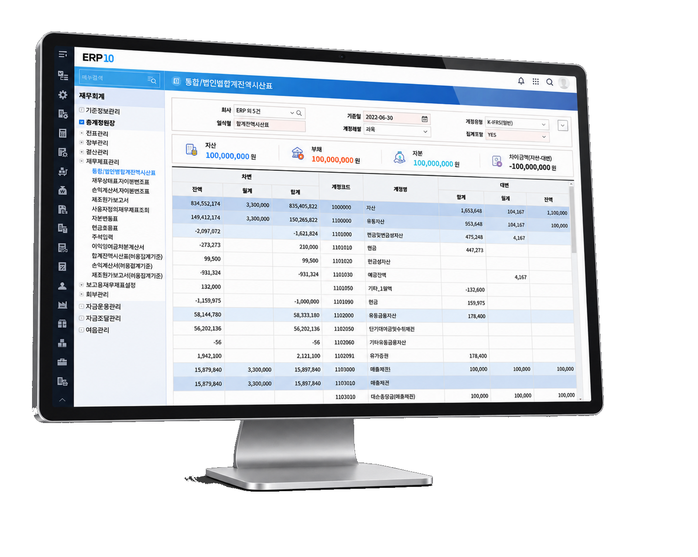
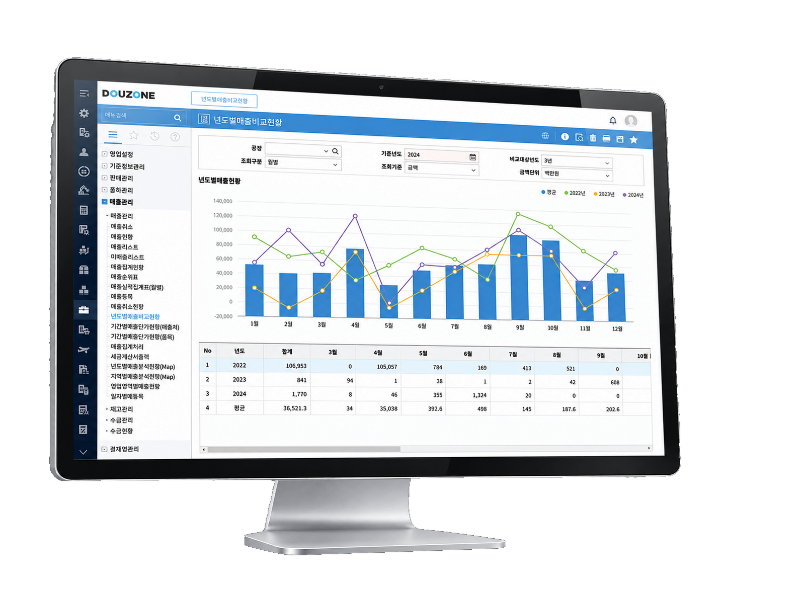
조직원과 사용자 중심의
HR 환경 구현
- 인사관리업무 — 조직관리, 근태관리, 급여관리, 퇴직금관리, 복리후생, 연말정산, 원천세신고
- 대사우관리(ESS) — 개인정보 변경 신청, 증명서 발급신청 및 출력
- 전략적인 HRD 기능 — 인재육성·경력개발·핵심인재 및 교육관리, KPI/MBO 기반 성과평가 및 종합평가
데이터 기반의
실시간 SCM 프로세스 정립
- 실시간 영업이익 시뮬레이션 — 영업채널별 가격요소 계산을 통한 최적의 판매가 산출
- 다양한 구매활동의 전산화 — 서비스·용역·비용·자산·설비 등 전사 통합 구매 기능 제공
- 목적 및 변화에 따른 BOM관리 — 연구·생산 목적별 BOM관리, 버전 및 대체번호를 통한 BOM 변경관리
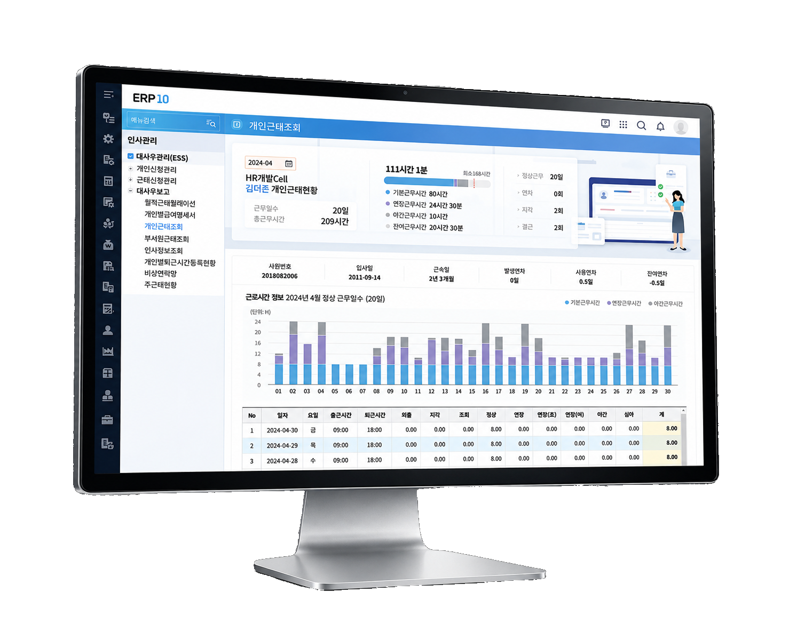
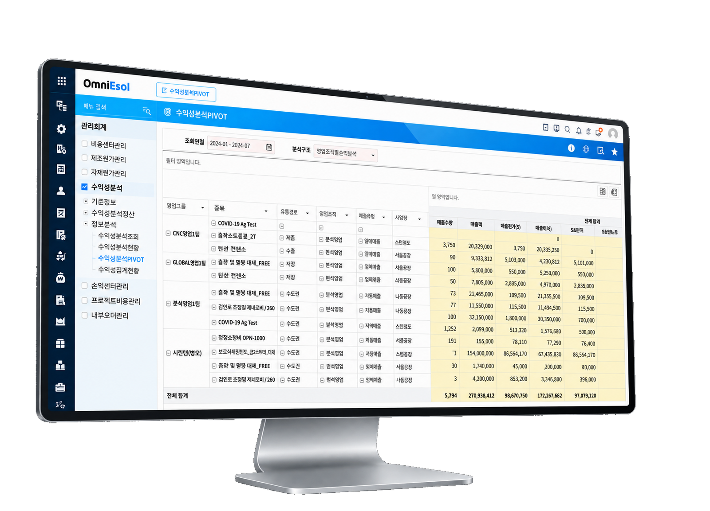
민첩한 의사결정을 위한
실시간 분석 모니터링 체계 구축
- 재무회계·물류부문 통합 — 실시간 경영성과 및 비용/수익 추적 가능
- 실시간 표준원가 시스템 — 수불 발생 시 실시간 원가 정보 제공, 표준원가 적용 실시간 매출원가·이익관리
- 다차원 수익성 분석 — 특성 정보 추출·조합을 통한 실시간 손익 정보 제공, 수익·비용 조정 및 배부로 분석 영역별 자료 생성
OmniEsol ERP Core 모듈 구성
재무·인사·공급망·원가까지 기업 경영의 모든 영역을 하나의 Core로 통합합니다.
FCM — 재무회계관리
- 재무회계 — 전표·장부·결산관리, 재무제표관리, 보고용재무제표설정, 배부관리, 경비청구, 매출채권·매입채무, 고정자산관리
- 예산관리·공공기관예산 — 예산편성, 예산통제, 예산조정, 예산보고서
- 세무관리 — 부가세, 원천세, 법인세, 전자세금계산서
- 자금관리 — 자금수지, 외화관리, 자금운용, 금융거래 연동
HRM — 인사관리
- 채용관리 — 전형기준, 입사지원, 채용결과·보고서
- 인사·근태·급여관리 — 사원정보, 발령처리, 조직개편, 출결관리, 유연근무, 급여계산, 사회보험, 퇴직금, 연금관리
- 인재육성·성과관리 — 직무관리, 법정교육, 경력개발, 평가기준·등록, 목표관리
- 대사우관리(ESS) — 개인신청, 근태신청, 급여·근태현황, 퇴직금 현황
SCM — 공급망관리
- 영업관리 — 판매계획/여신, 납품관리, 견적/계약/수주, 매출/채권/수금, Billing
- 구매·재고관리 — 구매품의, 구매입고·발주, 매입관리, 입출고관리, 수불포스팅
- 생산·품질·설비관리 — SOP, 현장작업관리, MPS/MRP, 생산수불관리, 품질기준·검사결과, 설비BOM, 수리·보전·점검
- 무역·프로젝트관리 — 수출입프로세스, 수출경비, 미착관리, WBS, 인력·일정·정산관리
CO — 원가·수익성관리
- 비용센터회계 — 비용센터계획, 비용센터결산, 정보분석, 비용센터실제원가
- 수익성분석 — 기준정보, 수익성분결산, 정보분석, 수익성분계획
- 제조원가·자재원장관리 — 제품원가계획, 오더별·기간별제조원가, 제조원가결산대체, 자재원가결산, 재고계획
- 손익센터·프로젝트비용관리 — 손익센터결산·집계배부·계획, 프로젝트비용계획·결산
ERP를 더 넓게, More 확장 모듈
회계 규제 대응부터 그룹 경영·모바일까지 ERP의 영역을 확장합니다.
리스회계
- 리스입대차, 현재가치계산
- 리스계약, 만기분석
경비청구
- 카드정보, 개인경비등록
- 자료수집, 지출결의
내부회계
- Scoping, 설계평가
- 모집단관리, 운영평가
ITGC
- 보안관리, 로그관리
- 운영관리, 모니터링
연결결산관리 · 그룹성과
- 결산기초업무, 연결결산처리, 법인자료취합, 연결주석관리
- 경영성과, 계열사손익, 그룹인사, 그룹감사/자금
Mobile ERP
- 인사, 자산, 영업, 입/출고, 생산실적
- 경비청구, W/F, NAHAGO 연동
전사코드통합 · 프로세스 표준화
- 그룹통합정보, 보안·권한설정, 회사기준정보, 환경설정
- 프로세스맵, W/F, 사용자가이드
데이터수집 · Edge Options
- IoT Data 수집
- 제조기록, 칭량관리, 수리센터, 공정물류
다양한 산업에 최적화된 업종 특화
업종별 비즈니스 특성을 반영한 산업 특화 기능을 제공합니다.
언제 어디서나 연결되는 협업의 시작
Groupware & 문서관리
PC·모바일·스마트워치까지 완벽하게 동기화되는 그룹웨어와 ONEFFICE·ONECHAMBER 문서 솔루션으로 손쉽고 빠른 문서 작성·관리·공유의 업무 혁신을 경험하세요.
스마트워크에 최적화된
협업 환경
PC와 모바일, 스마트워치까지 완벽하게 동기화되는 그룹웨어로 언제 어디서나 신속한 협업과 의사결정을 지원합니다. OmniEsol ERP과 전자결재 연동을 기본 제공합니다.
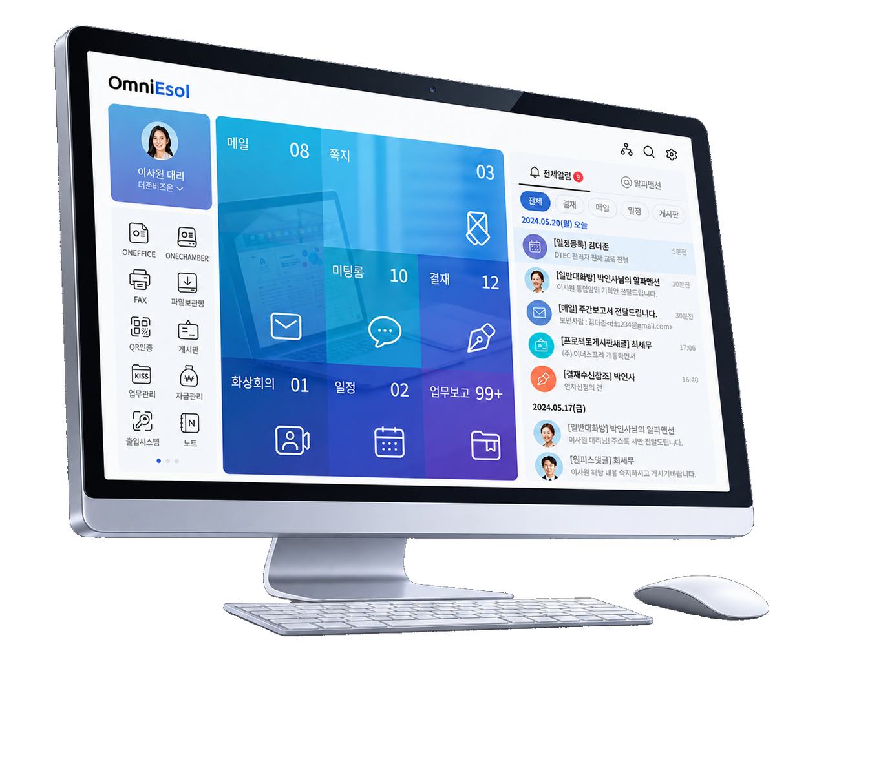
스마트워크에 최적화된 모바일 환경
- Web/PC메신저와 완벽 동기화
- Web에 제공되는 다양한 기능을 동일하게 지원
- 스마트폰, 태블릿 등 다양한 모바일 기기 완벽 지원
신속한 협업
- 조직도 기반의 커뮤니케이션
- PC와 모바일 메신저의 완벽한 동기화
- 별도의 저장없이 첨부 파일 바로보기 가능
직관적 소통 강화
- 알파멘션을 통한 신속하고 정확한 메시지 전달
- 다양한 이모티콘을 통한 감성 소통
고객 맞춤형 전자결재
- 승인·반려·후결·전결 등 기업의 업무 방식에 맞춤
- 다양한 결재 프로세스 및 양식 완벽 지원
- OmniEsol ERP과 전자결재 연동 기본 제공
통합 일정 관리
- 개인 일정뿐만 아니라 공유 일정까지 한 곳에서 관리
- 프로젝트 캘린더로 구성원과의 원활한 협업 일정 조율
신속한 의사소통 지원
- 첨부파일 바로보기로 열람 즉시 문서 확인
- 중요 메일 설정 시, 수신자의 메일함에 별도 표기
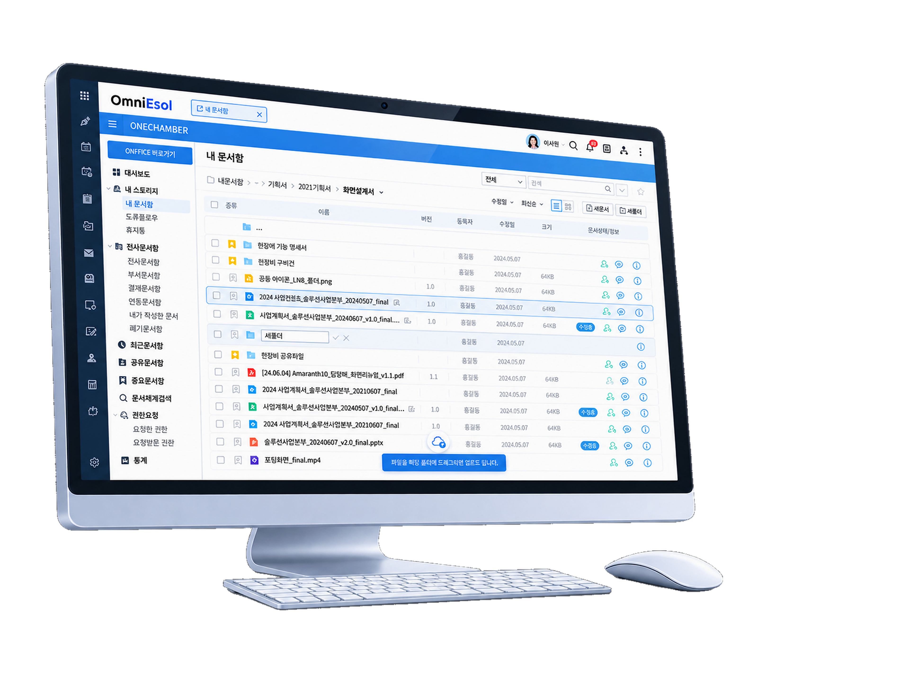
손쉽고 빠른 문서 작성·관리·공유로
경험하는 업무 혁신
- 문서작성 및 공유 — 꼭 필요한 필수 기능 중심으로 웹과 PC에서 문서를 쉽게 작성하고 공유
- 문서댓글 — 문서 내 댓글, 알파멘션 기능을 통한 실시간 소통 및 협업
- 연관문서 — 관련 문서들을 하나의 문서 안에서 연관 문서로 등록하여 관리
안전하고 체계적인
기업 문서관리의 모든 것
- 이력관리 — 콘텐츠 라이프 사이클 확인을 통한 문서의 체계적인 관리
- 다차원 분류체계 — 유형·속성·형식 등에 따른 체계적인 관리 및 상세 검색 기능
- 폴더 링크 공유 — 고유 URL 링크를 통한 대용량 파일의 빠른 공유
- 콘텐츠 보안 — 접근 범위 및 사용 권한의 세부적 설정
- 중복 파일 삭제 — 중복 파일의 자동 확인을 통한 관리 효율성 증대
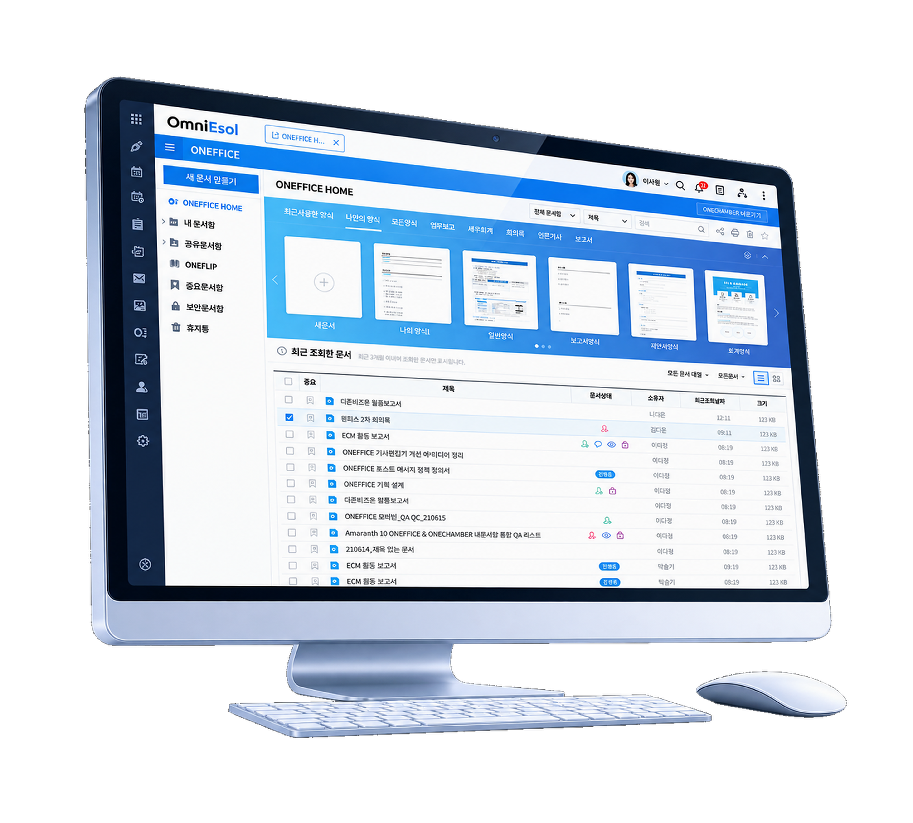
그룹웨어 주요 기능 모듈
전자결재부터 웹오피스까지, 협업에 필요한 모든 기능을 한 곳에서 제공합니다.
전자결재 · 문서관리
- 결재양식, 결재승인/반려
- 도큐플로어, 문서함관리
공지관리 · 일정/자원관리
- 공지사항·팝업, 즐겨찾기/스크랩
- 일정공유, 자원예약
프로젝트업무 · 웹오피스
- 프로젝트일정, 프로젝트협업
- 웹에디터/ONE AI, 공유문서
모바일 그룹웨어 · PC메신저
- 통합검색·알림, 알파멘션, 쪽지/대화, 일정관리, 전자결재, 메일송수신
- 조직도 기반 커뮤니케이션, PC-모바일 완벽 동기화
다양한 업무를 자동화하고, 복합적인 작업을 연속적으로 수행하는
나만의 업무 비서 ONE AI
ONE AI는 더존 업무용 솔루션과 결합되어 기업 내부 데이터를 학습하여 최적화된 정보를 제공합니다. 기업 내 데이터 기반 맞춤 생성형 AI로 기존 생성형 AI의 한계를 극복한 정확한 답변과 업무에 최적화된 UI/UX를 통해 업무 효율성을 극대화합니다.
기업 데이터가 AI의 답변이 되기까지
ERP와 그룹웨어의 데이터를 자산화하여 기업에 최적화된 답변을 제공합니다.
업무 데이터 자산화
회계·인사·물류(ERP)와 결재·메일·메신저(그룹웨어), 문서 작성 도구/파일저장소의 데이터를 자산화합니다.
RAG DB 구축
ERP DB·그룹웨어 DB와 연계된 RAG DB를 구축하여 기업 내부 지식을 학습합니다.
데이터 요청·분석
사용자 질의에 따라 필요한 데이터를 요청·분석하고 데이터 분석/생성을 수행합니다.
최종답변 제공
기업 데이터에 근거한 정확한 최종답변을 사용자에게 제공합니다.
업무영역별 ONE AI 활용
문서·결재·메신저·메일·ERP까지 업무 전 영역에서 AI가 함께합니다.
ONEFFICE & ONECHAMBER
"문서 작성 업무는 최소한으로"
템플릿·바인딩으로 문서 작성 시간을 줄이고, 다중문서분석·교차검증으로 정확도를 높이며, 태그 및 연관문서를 자동 추천합니다.
전자결재
"복잡한 결재 건도 빠른 의사결정"
결재 본문을 자동 요약하고 유관자료를 분석하여 의사결정에 필요한 정보를 한눈에 제공합니다.
메신저
"프로젝트 보고서를 손쉽게"
대화에서 이슈를 자동으로 정리하고, 논의 내용을 바탕으로 프로젝트 보고서를 작성합니다.
메일
"메일 응답 업무의 간소화"
수신 메일 및 첨부파일을 분석하고, 맥락에 맞는 맞춤형 메일 답장을 생성합니다.
ERP · 포털 · 일정 · 모바일
ERP, 모바일, 일정 등 업무 전 영역에 걸친 분석 및 요약 기능을 제공하여 복합적인 작업을 연속적으로 수행합니다.
OmniEsol이 약속하는 3가지 가치
최신 버전 유지
업무 시스템의 기능과 성능이 항상 최신 상태를 유지하도록 지원합니다.
완벽한 융합
비즈니스에 필요한 다양한 업무 시스템의 완벽한 융합을 제공합니다.
데이터 통합·분석
다양한 업무시스템 데이터를 통합·분석하여 인사이트를 도출합니다.
비즈니스의 가치를 더하는
OmniEsol 확장솔루션
전자구매/공급망관리부터 e-Account, MES, EHS, CRM/SFA, GSP까지 — ERP를 넘어 기업에 필요한 다양한 솔루션이 하나의 플랫폼에서 완벽하게 융합됩니다.
연결된 구매 프로세스로
투명하고 빠른 조달
- Risk 평가 — 공급사 신용·구매실적 데이터 평가로 원부자재 품질 향상
- 구매계획의 적시성 확보 — 가용정보 확장으로 자재수급계획 정확도 향상, 조달이슈 발생 시 신속한 구매소싱
- 투명성 및 추적성 강화 — 입찰·계약·발주 등 연결된 구매 프로세스로 구매 업무 투명성 확보
입력은 최소화하고
경비청구는 간편하게
- 사용자 중심의 개편된 UI — 입력 단계 최소화로 작성하기 쉬운 구성
- 효율적인 경비청구 프로세스 — 법인카드 연동자료 외 국세청 스크래핑 자료 경비청구 가능
- 경비청구 업무의 간소화 — 경비 사용자·용도 등에 따라 전표 자동 분개의 세분화
제조현장의 모든 상황을
실시간으로 모니터링
- 표준화된 안정적 시스템 — MESA 가이드 준수, 표준화 플랫폼 기반 패키지 적용으로 구축기간 단축·저비용 고효율
- 생산성 및 품질 향상 — 품질 검사 강화로 불량·클레임 감소에 따른 비용 절감
- 실시간 모니터링 강화 — 생산·설비·품질·물류 전반 모니터링 및 이상 발생 시 대응체계 마련
- ERP과 통합된 실시간 데이터 처리 — ERP 기준정보 일원화, 실시간 연동, 품질·검사(IQC/OQC) 관리, 작업 KPI 리포트
- 편리한 현장 작업 관리 — 작업지시조회, 작업실적입력, 작업실적현황을 현장에서 바로 처리
- 설비 이상 감지 및 가동/비가동 관리 — 설비측정 계획→일정→결과관리, 인터페이스 자동 입력 기반 이상 감지와 예방보전관리, 설비 가동률 분석
- 현장 실시간 모니터링 — 실시간 실적/불량정보, 설비가동률정보, 계획대비실적정보 제공
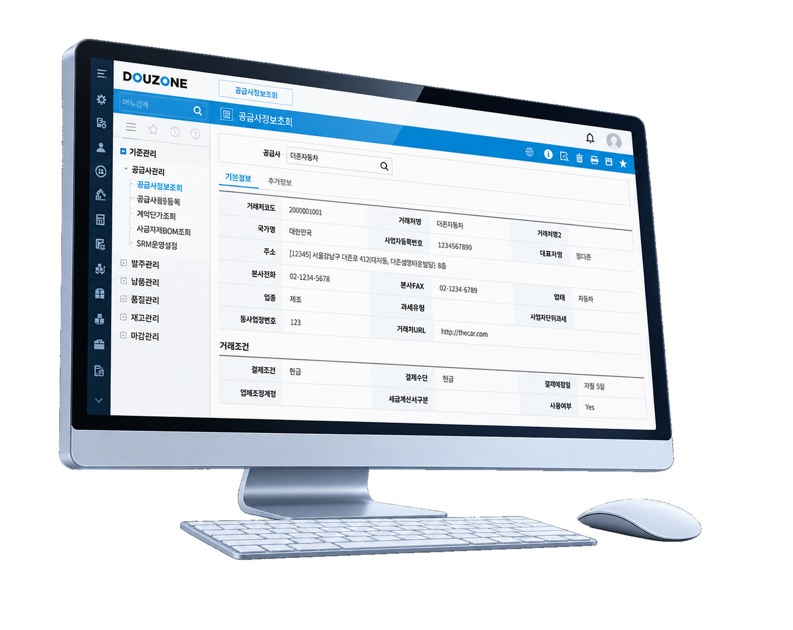
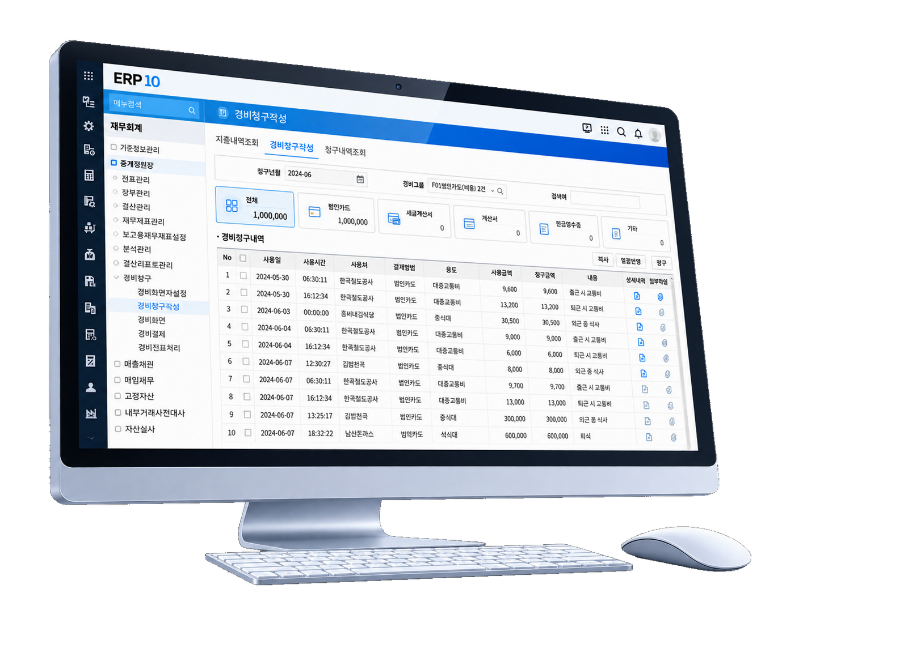
영업 시작부터 의사결정까지
필요한 정보를 적시에
- 영업기회 상호작용 — 영업기회·계약관리·수주·판매·매출 등 영업 정보를 적시 제공
- 고객 맞춤 데이터 통합관리 — 고객 특성에 맞는 영업·서비스·마케팅, 최신 데이터 공유로 생산성 향상
- 실시간 데이터 분석 — 영업 시작부터 의사결정까지 필요한 주요 정보 제공
안전보건 관리체계 표준화와
ESG 경영 지원
- 주요 항목의 표준화·모니터링 — 안전보건 관리체계 구축 및 조치 이행 표준화를 통한 운영 데이터 모니터링
- ESG 경영 지원 — ESG 경영리스크 및 성과관리에 대한 프로세스 기반의 효율적인 분석 지원
- 강화된 중대재해처벌법 대응 — 법적 요구 절차의 내재화 및 실시간 증빙 확보
표준화 · 모니터링
안전보건 관리체계 구축 및 조치 이행 표준화
ESG 경영리스크 분석
프로세스 기반의 효율적인 성과관리 분석
중대재해처벌법 대응
법적 요구 절차 내재화, 실시간 증빙 확보
구매·영업을 잇는 SRM · SFA · 전자구매
공급사부터 고객까지 거래의 모든 접점을 전산화합니다.
SRM — 공급사 관리
발주확인, 거래명세표, 납품계획, 매입확인까지 공급사와의 거래 프로세스를 체계화합니다.
SFA — 영업 자동화
고객주문, 납품확인, 주문승인, 채권조회로 영업 현장의 업무를 자동화합니다.
전자구매
입찰공고, 납품확인, 견적접수, 채권조회 등 구매의 전 과정을 온라인으로 처리합니다.
기업의 모든 시스템과 유연하게 연계
DIMS 기반의 통합 인터페이스로 사내외 시스템과 자유롭게 데이터를 주고받습니다.
안정적인 운영을 위한 Cloud 관제 서비스
서비스관제
클라우드 환경 서비스 전반의 상태를 관제합니다.
보안관제
보안 위협을 상시 모니터링하고 대응합니다.
서비스모니터링
서비스 성능과 가용성을 실시간으로 확인합니다.
서버모니터링
서버 자원 현황을 추적하여 장애를 예방합니다.
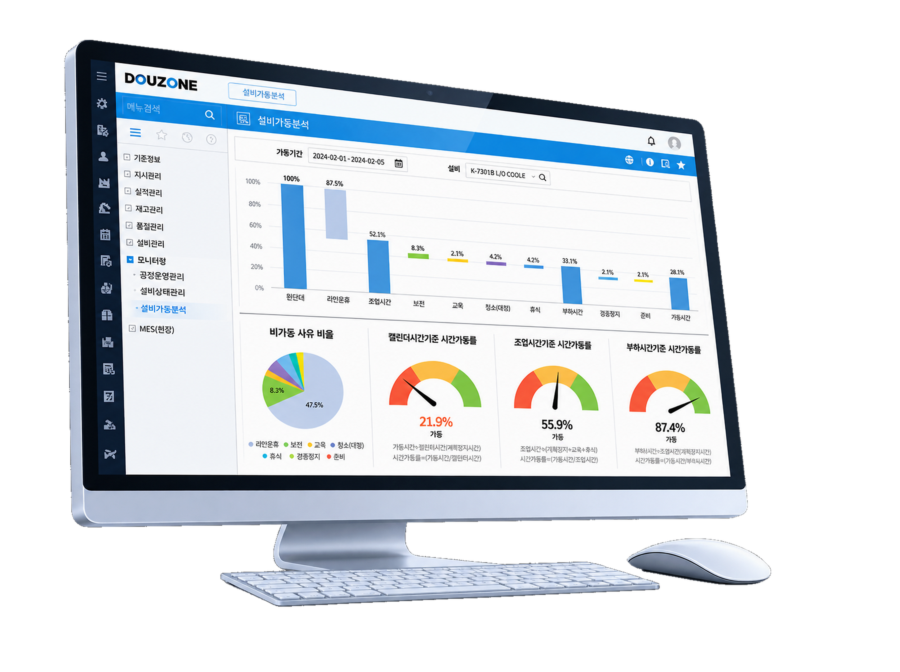
그룹사 업무 통합부터 표준화까지
그룹사 경영 최적화 완벽 지원
- GROUP VALUE UP — 그룹사 간 업무를 유기적으로 연계, 시너지 창출과 통합적 계획·운영·관리로 경영품질 향상
- GROUP BUSINESS PORTAL — 그룹경영정보 Dash Board, 데이터변화의 Real-Time 반영
- 그룹사 실적 집계/재배부/분석 — 그룹 기준 데이터 집계·재배부, 다차원 분석 자료 제공
- 경영진 보고 · 그룹 실적관리 — 실시간 시각화 보고, 리스크관리·계획 수립에 필요한 경영정보 신속 제공
개발툴 패러다임의 변화, AI가 도와주는
개발도구와 AI 플랫폼
DEWS Platform, GEN AI DEWS, Insight OFUS까지 — 개발 시간·비용 감소, 코드 품질 향상, 개발자 생산성 증가와 데이터 기반의 AI 혁신을 실현합니다.
개발 생산성과
효율성 극대화
모바일플랫폼, 형상/배포 도구(소스뱅크·DRS), 서비스관제(DEWS Studio·리포트 디자이너), Migration(ETL)까지 통합 제공하는 개발 플랫폼입니다.
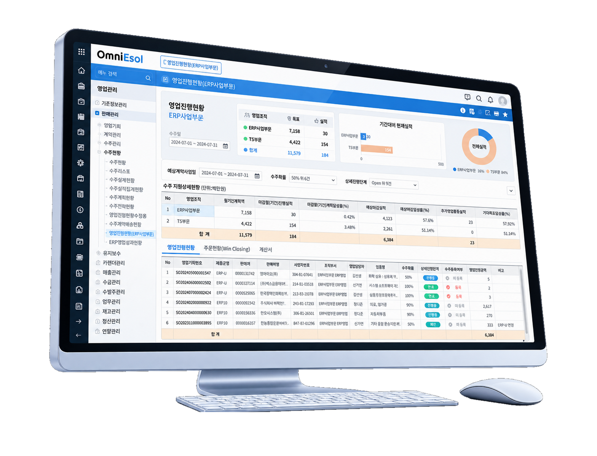
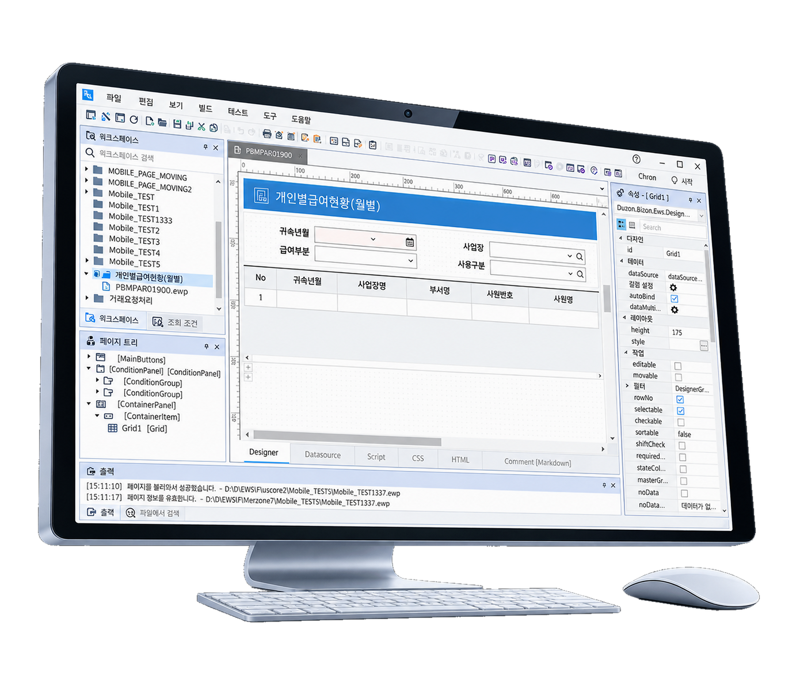
개발툴 패러다임의 변화
AI가 도와주는 개발도구와 개발자 챗봇
- 복잡한 코드 생성도 단순 단어 입력으로 — 생성형 AI 결합으로 테이블 구조 지식 없이도 쉽게 코드 생성, 표준 기반 자동 생성으로 오류 최소화
- 복잡한 설계서 자동 생성 — 생성된 코드 바탕의 설계 산출물 자동 생성으로 유지보수 용이
- Q&A 및 코드생성 챗봇 — 별도 매뉴얼/학습비용 없이 ERP 도메인 DB·코드에 대한 질문 및 답변 제공
데이터 수집부터 시각화까지
인사이트 확보를 위한 AI MLOps 플랫폼
AI 모델을 개발/학습할 수 있는 클라우드 기반 AI MLOps 플랫폼으로, 다양한 산업영역에서 하나의 플랫폼을 통해 데이터 기반의 AI 혁신을 실현합니다.
- 모델의 지속적인 개선 — 성능 모니터링과 데이터 수집·분석으로 모델 성능을 지속 개선
- 빠른 속도의 모델 개발 — AI 전 주기 관리 플랫폼으로 개발 시간·비용 절감, 시장 변화에 빠른 대응
- 데이터 기반 의사결정 — 데이터 수집·분석으로 인사이트를 도출, 신뢰성 향상
- 모델의 안정적인 운영 — 리소스 효율 관리, 장애 발생 시 빠른 대처
GEN AI DEWS 도입 기대효과
개발 과정에서 발생할 수 있는 오류를 줄이고, 수정 비용과 시간을 절약합니다.
개발 시간 및 비용 감소
AI가 작성한 코드 활용으로 빠르고 정확한 개발이 가능하며, 오류에 따른 수정 비용과 시간을 절약합니다.
경쟁 우위 확보
빠른 개발 속도로 시장 출시 시간을 단축시켜 경쟁 우위 확보에 기여합니다.
코드 품질·생산성 향상
표준 기반 자동 생성으로 코드 품질이 향상되고, 담당자가 바뀌어도 표준 산출물로 유지보수가 쉽습니다.
DEWS Platform 구성요소
개발부터 배포·관제·이관까지 개발 전 주기를 지원합니다.
모바일
모바일플랫폼을 통한 모바일 업무환경 개발 지원
형상/배포 도구
소스뱅크, DRS 기반의 형상관리와 안정적인 배포
서비스관제
DEWS Studio, 리포트 디자이너를 통한 서비스 관제
Migration
ETL 기반의 데이터 이관 및 통합
Insight OFUS 6대 도구
데이터 수집부터 가명화까지 AI 전 주기를 하나의 플랫폼에서 관리합니다.
DW (Data Warehouse)
데이터 수집 도구 — 산재된 기업 데이터를 한 곳으로 모읍니다.
WIDE
데이터 분석 도구 — 수집된 데이터를 다각도로 분석합니다.
AI 데이터 레이블링 도구
AI 학습에 필요한 데이터 레이블링을 지원합니다.
WEHAGO BI
시각화·레포팅 도구 — 분석 결과를 직관적인 시각 자료로 제공합니다.
SIMULATOR
예측 모델링 도구 — 데이터 기반의 예측 모델을 구축합니다.
WE DP
데이터 가명화 도구 — 개인정보를 안전하게 가명 처리합니다.
데이터와 기술을 융합하고 업무를 연결하여
AX로 진화하는 새로운 패러다임의 시작
더존의 기술력 및 노하우가 집결된 AI 기술로 업무는 혁신되고 기업 성장은 더욱 가속화됩니다.